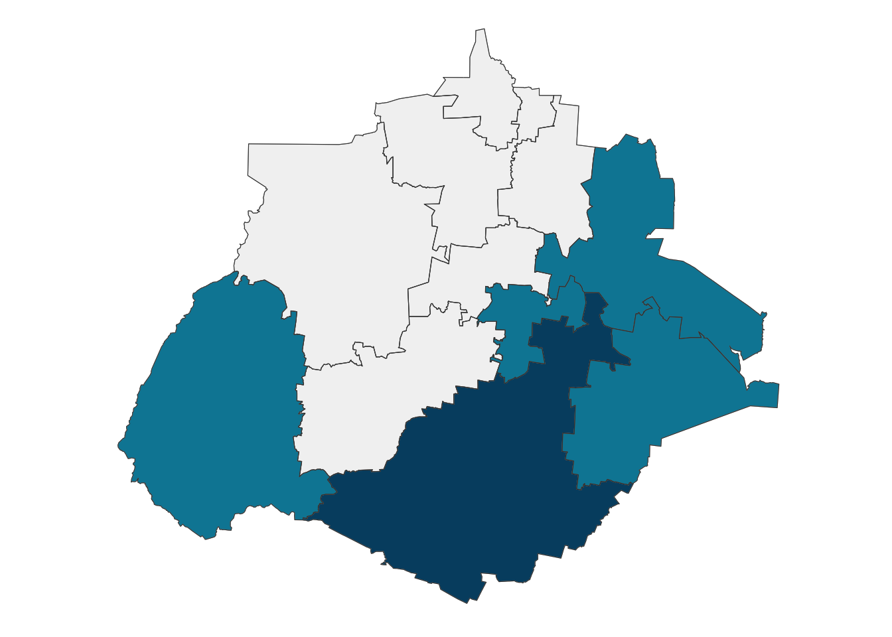

Analysis of Educational Institutions in Aguascalientes, Mexico
Acceso educativo
In Mexico, the discussion on access to education through public and private institutions focuses on key issues such as equity, educational quality, and the role of the state. Although public education has been the main means of access for most Mexicans, challenges persist in terms of coverage, especially in rural areas, while private education has grown significantly, mainly in urban areas and higher levels, although its access is limited to more privileged sectors.
This duality has generated a gap in educational opportunities, exacerbating socioeconomic inequalities. The current discussion also includes the debate on the regulation of the private sector and the financing of both modalities, in a context that seeks to guarantee the right to quality education for all.
Distribution of schools by educational level and sector
Nivel Educativo | Tipo de Sostenimiento | Total de Escuelas | Proporción (%) |
|---|---|---|---|
PREESCOLAR | PRIVADO | 176 | 31% |
PREESCOLAR | PÚBLICO | 388 | 69% |
PRIMARIA | PRIVADO | 104 | 15% |
PRIMARIA | PÚBLICO | 576 | 85% |
SECUNDARIA | PRIVADO | 71 | 22% |
SECUNDARIA | PÚBLICO | 245 | 78% |
MEDIA SUPERIOR | PRIVADO | 114 | 39% |
MEDIA SUPERIOR | PÚBLICO | 181 | 61% |
SUPERIOR | PRIVADO | 53 | 73% |
SUPERIOR | PÚBLICO | 20 | 27% |
Escuelas por ubicación

Nivel Educativo | Total de Escuelas | Proporción (%) |
|---|---|---|
AGUASCALIENTES | 1,342 | 52% |
ASIENTOS | 200 | 8% |
CALVILLO | 178 | 7% |
COSÍO | 49 | 2% |
EL LLANO | 103 | 4% |
ENCARNACIÓN DE DÍAZ | 3 | 0% |
JESÚS MARÍA | 236 | 9% |
LAGOS DE MORENO | 2 | 0% |
OJUELOS DE JALISCO | 2 | 0% |
PABELLÓN DE ARTEAGA | 104 | 4% |
RINCÓN DE ROMOS | 139 | 5% |
SAN FRANCISCO DE LOS ROMO | 98 | 4% |
SAN JOSÉ DE GRACIA | 42 | 2% |
TEPEZALÁ | 88 | 3% |